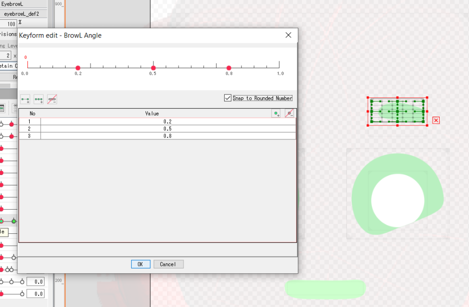

説明書を読み込む
Cubism 3+ フォーマット
AnimazeのプラットフォームはCubism 3+（3.0、3.1、3.2、3.3のモデルでテスト済み）のランタイム用にエクスポートされたLive2Dのアバターをサポートしています。CubismのモデルをAnimazeに追加するのは、Cubism Editorでエクスポートされる以下のような情報をできるだけ多く利用するためです：
➢ 特殊アクション（トラッキング・リマッピングに優先するフル・アニメーション） – システムは、アバターの「motions/」フォルダーにある「*.motion3.json」のファイルを探します
➢ 特殊ポーズ（トラッキング・リマッピングの影響を受けることなく、特定の値を必要とする特定のアニメーション入力） - システムは、アバターの「expressions/」フォルダーにある*「.exp3.json」のファイルを探します
➢ デフォルトの待機ポーズ（デフォルトのポーズで特定のパーツを非表示にします） - 「*.pose3.json」のファイル
➢ 物理演算 ―― 「*.physics.json」のファイル
➢ その他のモデル情報（上記のファイルと.moc3、テクスチャーなどを見つけます） - 「*.model3.json」のファイル
Live2D特殊アクション
特殊アクションと特殊ポーズには制限がなく、以下の動作を考慮に入れるだけで利用できます。
• キャラクターを待機ポーズに戻す必要がある場合、特殊アニメーションは、待機ポーズで終了する必要があります。そうしなかった場合、アニメーションの最後のフレームの状態のままになります。
• 特殊ポーズのアニメーション入力はトラッキング・リターゲティングで上書きされます
例えば、特殊ポーズがParamEyeLOpenの入力を0に変更する（目を閉じる）場合、顔のトラッキングによって上書きされます。Animazeのトラッキングシステムでマッピングされていない入力を使用することを推奨します。
2Dアバターに待機アニメーションを作るには、アバターがジェネリックな位置（たいていは呼吸のアニメーション）にある選択済みパラメーターを動かして、ループ可能なを作成する必要があります。最初と最後のアニメーションのフレームは必ず同一である必要があります。
運動パラメーター
Animazeのトラッキング・マッピングで制御されるアニメーション入力のリストは以下の通りです：
頭の動き：
• ParamAngleX ―― 右から左にひねる動き。
• ParamAngleY ―― 下から上への動き。
• ParamAngleZ ―― 右から左に傾く動き。
体の動き：
• ParamBodyAngleX ―― 右から左にひねる動き。
• ParamBodyAngleY ―― 下から上への動き。
• ParamBodyAngleZ ―― 右から左に傾く動き。
• ParamBreath ―― 息遣いの動き。
目の動き：
• ParamEyeBallX ―― 右から左への動き。
• ParamEyeBallY ―― 下から上への動き。
• ParamEyeLOpen ―― 閉じた左目を開く動き。この入力のデフォルトの値は、目を完全に開けた状態として使用されます。最大値にすると目を大きく開く動きがリマッピングされ、最小値にすると通常の目を閉じる動きになります。
• ParamEyeROpen ―― 閉じた右目を開く動き。この入力のデフォルトの値は、目を完全に開けた状態として使用されます。最大値にすると目を大きく開く動きがリマッピングされ、最小値にすると通常の目を閉じる動きになります。
• ParamEyeBallForm ―― 顔をしかめる表情を補完するために目の輪郭を曲げる動き。
眉の動き：
• ParamBrowLY ―― 左の眉の下から上への動き。
• ParamBrowRX ―― 右の眉の下から上への動き。
• ParamBrowLAngle ―― 左の眉を傾ける動き。
• ParamBrowLForm ―― 左の眉の形を変える動き。
• ParamBrowRAngle ―― 右の眉を傾ける動き。
• ParamBrowRForm ―― 右の眉の形を変える動き。
口の動き：
• ParamMouthOpenY ―― 閉じた口を開ける動き。
• ParamMouthForm ―― 悲しい顔から笑顔への動き。
• ParamMouthSize： 唇をすぼめる運動。
ParamMouthSizeは非標準のLive2Dパラメーターで、唇をすぼめる動き用にAnimazeでオプション的に使用されます。
口のデフォルトサイズはパラメーターの範囲の真ん中で、最小値に近づけることで口を縮め、最大値に近づけることで口を大きくします。
Animazeは間隔の前半半分（最少から真ん中まで）のみを使用します。間隔の具体的な値は、0が口のデフォルトサイズで-1から1と推奨されていますが、強制ではありません。
Animazeのリターゲティングシステムは、パラメーターがどんな値にもなるよう、Live2Dパラメーター適用前に全ての値（0～1）を標準化します。E.G. ParamMouthOpenYは、デフォルトは0で-10から10までを定義するため、Animazeが半笑い-の-0.75と設定した場合、ParamMouthOpenYのパラメーターに5を加えます。
ただし、Live2Dのパラメーターには以下の範囲を推奨しています：
|
アイテム |
最小値 |
デフォルト値 |
最大値 |
|
ParamEyeLOpen ParamEyeROpen |
0 |
0.75 |
1 |
|
ParamEyeBallX ParamEyeBallY |
-1 |
0 |
1 |
|
ParamBrowLY |
-1 |
0 |
1 |
|
ParamBrowLX |
-1 |
0 |
1 |
|
ParamBrowLAngle ParamBrowRAngle |
0 |
0.5 |
1 |
|
(*)ParamBrowLForm (*)ParamBrowRForm |
0.2 |
0.5 |
0.8 |
|
ParamMouthForm |
-1 |
0.5 |
1 |
|
ParamMouthOpenY |
0 |
0 |
1 |
|
(*)ParamMouthSize |
-1 |
0 |
1 |
(*)表内のParamBrowLFormとParamBrowRFormの値は、現在のトラッキングシステムで眉毛を意識的に変形させます。

また、こことここから標準Cubismパラメーターを確認することができます。
用語集
|
用語 |
説明 |
|
Animazeアプリ |
Animazeのプラットフォームは、相互に結合したいくつものアプリのマルチ・プラットフォームとして考案されたものです。現在、Animazeアプリは、iOS用アプリAnimaze Avatarと、近日中に登場するWindowsのコンピューター用のアプリです。 |
|
Animazeエディター |
エディターはあなたのアセットをAnimaze対応形式に変換/トランスコードするための追加ツールです。 言い換えると、アバターは、Animazeエディターの外部において、別個のコンテンツ生成パイプラインでモデル化されます。アバターのコンテンツをモデル化すると、エディターを使用してそのコンテンツをAnimazeアプリに追加することができます。 エディターは、アバターとその関連コンテンツ（アイコン、名前、説明、マテリアル、物理演算、パーティクル・システム、音声、背景、ライトなど）の設定やカスタマイズを行う機能も提供しています。 |
|
Animazeエンジン |
AnimazeエディターとAnimazeアプリの主要機能には以下のものが含まれます：
|
|
アセット |
モデルの元ファイル（2Dまたは3D）。これらの元ファイルはAnimazeエディターにインポートされ、Animaze対応形式に変換され、効率的に保管し、ランタイムで読み込めるようになります。 Animazeエディターは、「Assets」フォルダーを作成し、様々なその他の操作用にインポートすべての元ファイルをそこに保管します。 |
|
ブレンドシェイプ |
ブレンドシェイプ・アニメーション、パーバーテックス・アニメーション、シェイプ補間、シェイプ・キー、またはブレンドシェイプは、骨格のアニメーションとともに使用される3Dコンピューターのアニメーション方式です。モーフ・ターゲット・アニメーションでは、メッシュの「デフォームド」バージョンが一連の頂点位置として保存されます。アニメーションの各キー・フレームでは、これらの保存位置にバーテックスが補間されます。 「モーフ・ターゲット」はシェイプのデフォームド・バージョンです。例えば、人間の顔の場合、まずは頭が表情なしの状態でモデル化され、「ターゲット・デフォーメーション」が他の各表情用に作成されます。顔をアニメーション化する際には、アニメーターが、基礎のシェイプと複数のモーフターゲットとのあいだで、円滑にモーフ（またはブレンド）することができます。 ブレンドシェイプ・アニメーションは表情の制御を補助しますが、直線アニメーションであるため、表示の移動点で制限されます。ただし、一部のアニメーションはブレンドシェイプで実現することができないため、骨格のアニメーションを使う必要があります。 |
|
Cubism |
Cubismは、Live2Dモデルを動かす技術であり、AnimazeエディターとAnimazeアプリに統合されています。そのため、これら2つのソフトウェアでは、2Dキャラクターのレンダリングとアニメーションを行うことができます。 |
|
Cubism Editor |
Cubism Editorは、Live2Dモデルを作成することのできるソフトウェアです。作成したモデルは、AnimazeエディターでAnimaze対応アバターに変換/転換し、Animazeアプリに送信することができます。 |
|
リソース |
効率的に保管し、読み込むために特別に作成されたAnimaze対応のランタイムファイルです。 リソースは、アバター、小道具、背景などのことです。 |
|
リターゲティング |
Animazeアプリは、顔のトラッキング技術を使用して、ユーザーの顔の表情を検出し、トラッキングしています。リターゲティングは、マッピング・システムであり、未加工のトラッキング・データを取得、処理、判断して、アバターのアニメーション入力にマッピングします。 |
|
シェーダー |
用語的には、シェーダーはGPUプログラムであり、アイテムのレンダリングを可能にします。マテリアルはシェーダーのセットアップ設定であり、Animazeシェーダーが使用するテクスチャー、様々なファクター、フロート値などの情報を伴います。 |
|
骨格のアニメーション ―― 全関節ベース |
コンピューター・アニメーションにおける技法の1つであり、キャラクター（またはその他の関節でつながれたオブジェクト）を、キャタクターを描画するための表面の表現（スキンまたはメッシュ）と、メッシュをアニメーション化（ポーズやキーフレーム）するための相互に連結された骨格の階層セット（骨格または装具）の2つの部分に分けて表示します。 この技法は人間のアニメーション化や、有機体のモデリングでしばしば使用されますが、その用途はアニメーションのプロセスをより直感的なものにすることのみです。また、同じ技法を使用して、あらゆるオブジェクト（ドア、スプーン、建物、銀河）のデフォーメーションを制御することもできます。 アニメーション化されるオブジェクトが、例えばヒューマノイドのキャラクターなどの一般的なものである場合、骨格のセットは階層的または相互連結されたものではなく、単に、それが影響を及ぼすメッシュやスキンのパートのモーションのより高次の概要を示すだけである可能性もあります。 この技法は、一連の「ボーン」によって使用され、リギングと呼ばれることがあります。各ボーンには、デフォルトのバインドポーズから3次元的に変形（その位置、スケール、方向を含む）する機能、およびオプションの親ボーンがあります。そのため、ボーンは階層を形成します。子ボーンの変形は、親ボーンの変形と、その子ボーン自体の変形で構成されます。 |
|
特殊アクション |
特殊アクションは、アバターの待機モーションに優先されるアニメーションのことです（Live2Dモデルでは、*.motion3.jsonファイルを使用しています）。アニメーションは実行ごとに1度しか行われないため、待機ポーズで開始し、待機ポーズで終了することを推奨します。 特殊アクションはリターゲティング・システムでは実行されません。実行するには、アプリのユーザーが、実装されているAnimazeアプリごとに異なるキーバインド入力やボタン入力を行う必要があります。 特殊アクションの例としては、ダンスの動きを思い浮かべてください。 |
|
特殊ポーズ |
特殊ポーズは、待機ポーズに追加または優先される単一フレームのアニメーションのポーズです（Live2Dモデルでは、*.exp3.jsonファイルを使用しています）。特殊ポーズはオンとオフの切り替えが可能であり、同時に複数オンにすることもできます。 特殊ポーズはリターゲティング・システムでは実行されません。オンとオフを切り替えるには、アプリのユーザーが、実装されているAnimazeアプリごとに異なるキーバインド入力やボタン入力を行う必要があります。 |
|
サブサーフェス・スキャタリング ―― SSS |
サブサーフェス・スキャタリングは、ブドウなどの半透明な表面で、光がどのように透過し、吸収されて拡散され、様々な場所から抜け出るかをシミュレーションすることによって動作します。 光線が通過し、表面に当たると、同時に多くのことが起こります。光の一部は反射し、スペキュラーライトになります。ただし、一定レベルの透過性を有する一部のマテリアルでは、光の一部が表面に吸収されます。光線が内部に入ると、一面に拡散し、表面の様々な場所から放出され、サブサーフェス・スキャタリングを行います。 |